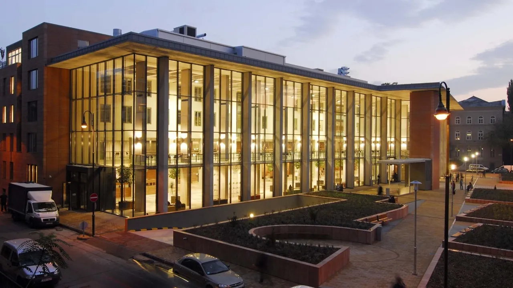
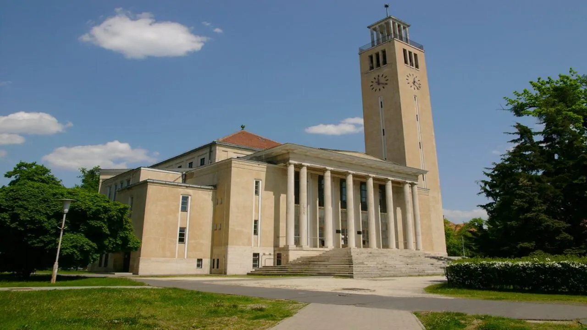

Yurt dışında eğitim planlayan öğrencilerin en çok merak ettiği konuların başında bütçe gelir. Macaristan bu açıdan Avrupa'nın en avantajlı ülkelerinden biri olarak öne çıkar. Eğitim ve yaşam giderleri birlikte değerlendirildiğinde bir akademik yılın toplam maliyeti 8.500 – 14.000 € aralığında kalır.
Öğrenim ücretleri programa göre değişir. Lisans programlarında yıllık 3.000 – 5.000 €, yüksek lisansta 4.000 – 6.000 €, tıp ve diş hekimliğinde ise 15.800 € ile 19.900 $ arasında bir tutar söz konusu. Bunlara aylık 60 – 550 € arasında konaklama gideri ve yaklaşık 300 € tutarında günlük yaşam gideri eklenir.
Hun Education olarak, öğrencilerimiz için gerçekçi bir bütçe planı çıkarıyoruz. Program, şehir ve konaklama tercihine göre her kalemi tek tek hesaplıyor; ödeme takvimini başvurudan önce netleştiriyoruz.
Öğrenim ücretleri




Macaristan'ın en güçlü tarafı hiç şüphesiz fiyatı. Aynı bölümü Batı Avrupa'da okumak çoğu zaman iki katına yakın bir bütçe gerektirir. Aşağıdaki tablo yıllık öğrenim ücretlerini gösterir; konaklama ve yaşam giderleri bu rakamlara dahil değil.
| Seviye / alan | Yıllık ücret | Süre |
|---|---|---|
| Lisans | 3.000 – 5.000 € | 3 – 4 yıl |
| Yüksek lisans | 4.000 – 6.000 € | 2 yıl |
| Doktora | 6.000 – 8.000 € | 3 – 4 yıl |
| Tıp | 15.800 € – 19.900 $ | 6 yıl |
| Diş hekimliği | 18.600 € | 5 yıl |
| Psikoloji | 7.800 – 9.400 € | 3 yıl |
| Pilotaj | 29.500 € | 3,5 yıl |
| İngilizce hazırlık | yıllık 2.500 €'dan | 1 yıl |
Üniversiteye göre farklar
Aynı seviyedeki programlar üniversiteye göre de farklılaşır:
| Üniversite | Şehir | Yıllık ücret |
|---|---|---|
| Eötvös Loránd Üniversitesi (ELTE) | Budapeşte | 4.000 – 6.000 € |
| Debrecen Üniversitesi | Debrecen | 3.500 – 5.500 € |
| Pécs Üniversitesi (PTE) | Pécs | 3.000 – 5.000 € |
Yaşam giderleri

Yaşam giderleri tek başına yılda 4.000 – 8.000 € tutar. Şehir seçimi burada belirleyicidir: Budapeşte en yüksek, Szeged, Pécs ve Nyíregyháza gibi şehirler belirgin biçimde daha düşük seyreder.
| Kalem | Tutar | Dönem | Not |
|---|---|---|---|
| Üniversite yurdu | 60 – 400 € | Aylık | Kontenjan sınırlı, erken başvuru şart |
| Kiralık oda | ≈ 350 € | Aylık | Paylaşımlı daire |
| Stüdyo daire | ≈ 550 € | Aylık | Faturalar ayrı olabilir |
| Market ve faturalar | ≈ 300 € | Aylık | Ortalama öğrenci harcaması |
| Toplu taşıma | 120 € | Aylık | Öğrenci indirimleri değişebilir |
| Sağlık sigortası | 300 € | Yıllık | Kayıt için zorunlu |
Tek seferlik ücretler
| Kalem | Tutar | Ne zaman |
|---|---|---|
| Başvuru ücreti | 140 € | Başvuru anında · iade edilmez |
| Öğrenci vizesi | 95 – 145 € | Kabul mektubu sonrası |
| Konaklama depozitosu | 120 € | Yerleşim sırasında |
Yıllık toplam bütçe

Kalemleri tek tek toplamak yanıltıcı olur, çünkü konaklama tercihi tek başına yıllık birkaç bin euroluk fark yaratır. Gerçekçi planlama aralığı şudur:
8.500 – 14.000 €: eğitim ve yaşam giderleri dahil, lisans seviyesi için. Tıp ve diş hekimliğinde öğrenim ücreti tek başına 15.800 € ile 19.900 $ arasında olduğu için toplam bütçe bu aralığın belirgin şekilde üstündedir.
Bütçe planınızı nasıl kuruyoruz
Bu tablolara bakıp kendi rakamınızı çıkarmakta zorlanabilirsiniz; gayet doğal. Görüşmede dört adımı birlikte tamamlıyor, size özel bir yıllık bütçe tablosu hazırlıyoruz.
Program ve şehri sabitleyin
Öğrenim ücreti ile kira birlikte değişir; ikisini ayrı ayrı değil aynı anda planlıyoruz.
Konaklama senaryosunu seçin
Yurt, paylaşımlı oda ve stüdyo daire arasındaki fark yıllık bütçenin en büyük değişkeni olur.
İlk yılın tek seferlik ücretlerini ekleyin
Başvuru, vize ve depozito yalnızca ilk yıl karşınıza çıkar ama nakit ihtiyacını öne çeker.
Kur riskini hesaba katın
Ücretler euro ve dolar cinsinden; ödeme takvimi boyunca kur hareketi bütçenizi etkileyebilir.
Sık sorulan sorular
Eğitim ve yaşam giderleri birlikte yıllık 8.500 – 14.000 € aralığındadır. Bu aralık, öğrenim ücreti ile konaklama tercihine göre değişir: yurtta kalan bir öğrenci alt sınıra, stüdyo dairede kalan üst sınıra yakın bir bütçeyle karşılaşır.
Tıp ve diş hekimliği laboratuvar, klinik uygulama ve daha uzun eğitim süresi gerektirdiği için ücretleri yıllık 15.800 € ile 19.900 $ arasındadır. Lisans programlarının çoğu 3.000 – 5.000 € aralığındadır.
Bu sayfadaki öğrenim ücretleri yıllıktır, pilotaj dâhil. Ödeme takvimi üniversiteye göre değişir; çoğu kurum dönem başında tahsil eder.
Burs olanakları üniversiteye, programa ve akademik yıla göre değişir. Güncel burs koşullarını başvuru öncesinde ilgili üniversitenin resmî sayfasından teyit etmek gerekir; danışmanınız hangi programlarda başvuru dönemi açık olduğunu paylaşır.
Kaynaklar ve doğrulama
- Öğrenim ücretleri üniversitelerin ilan ettiği güncel tarifelerden, yaşam giderleri ise Macaristan'da okuyan öğrencilerimizin gerçek harcama verilerinden derlenir.
- Tutarlar her akademik yıl başında danışmanlık ekibimiz tarafından yeniden doğrulanır.
- Ücretler üniversiteler tarafından değiştirilebilir. Nihai tutar için üniversitenin resmî sayfası esastır.
Değişiklik günlüğü
- : İçerik editoryal ve SEO denetiminden geçirildi; kaynak beyanları güncellendi.
- : Sayfa yayına alındı; ücret aralıkları, başvuru takvimi ve giriş sınavı şartları güncel veriyle yazıldı.